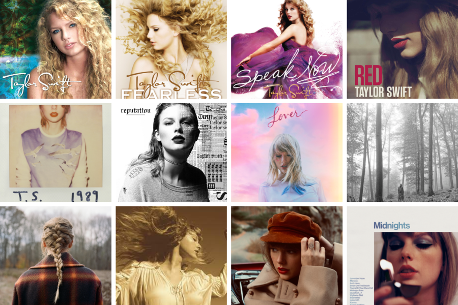

My Albums
These albums, each a lyrical masterpiece, delve into themes of love, heartbreak, and personal growth,
resonating deeply with a global fanbase. Join us on this musical journey as we explore the
intricacies of human emotions and share in the highs and lows of life, forging connections that
transcend borders and bring us closer together.
PLAY NOW
My Documentary
"Miss Americana" is an intimate documentary unveiling my life, artistic evolution, and my emergence
as an activist. It's a personal exploration of my struggles, triumphs, and my unwavering stand for
what I believe in, showing my transformation from a global pop sensation to a multifaceted cultural
icon.
WATCH NOW